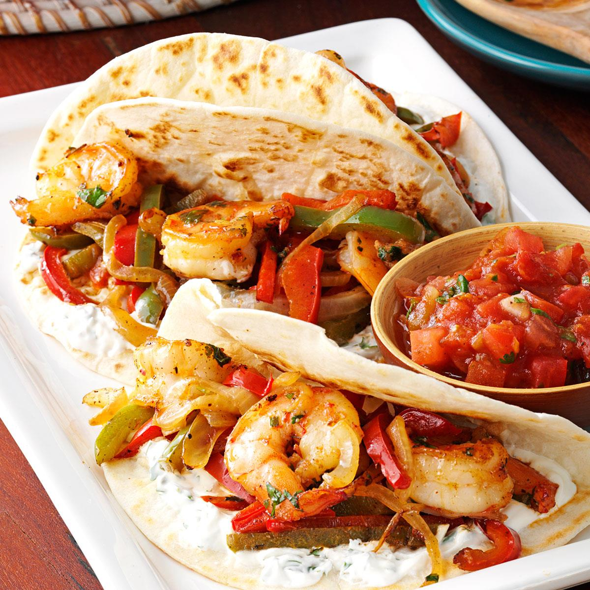

Shrimp Fajitas Recipe

The quickest (easiest) sheet pan dinner! Serve with warm tortillas for a lightening fast weeknight meal. SO GOOD!
A super speedy weeknight meal all made on one sheet pan? Yes, please!
With a simple chili powder mixture using pantry ingredients (chili powder, cumin, oregano, and paprika), I have been making this at least once a week, swapping out the shrimp for my other favorite sheet pan dinner.
INGREDIENTS:
- 1 1/2 teaspoons chili powder
- 2 teaspoons ground cumin
- 2 teaspoons dried oregano
- 1 teaspoon smoked paprika
- Kosher salt and freshly ground black pepper, to taste
- 1 red bell pepper, cut into strips
- 1 yellow bell pepper, cut into strips
- 1 orange bell pepper, cut into strips
- 1 sweet onion, cut into wedges
- 3 cloves garlic, minced
- 3 tablespoons olive oil, divided
- 1 1/2 pounds medium shrimp, peeled and deveined
- 1/4 cup chopped fresh cilantro leaves
- 1 tablespoon freshly squeezed lime juice
- 6 (8-inch) flour or corn tortillas, warmed
Steps
- Preheat oven to 425 degrees F. Lightly oil a baking sheet or coat with nonstick spray.
- CHILI POWDER MIXTURE: In a small bowl, combine chili powder, cumin, oregano, paprika, 1 teaspoon salt and 1 teaspoon pepper.
- Place bell peppers, onion and garlic in a single layer onto the prepared baking sheet. Stir in 2 tablespoons olive oil and half the POWDER MIXTURE; gently toss to combine.
- Place into oven and bake for 10 minutes, or until the vegetables are beginning to soften.
- In a large bowl, combine shrimp and remaining 1 tablespoon olive oil and POWDER MIXTURE.
- Working carefully, move vegetables onto one side of the baking sheet. Place shrimp onto the opposite side of the baking sheet in a single layer.
- Place into oven and bake just until shrimp are pink, firm and cooked through, an additional 6-8 minutes. Stir in cilantro and lime juice.
- Serve immediately with tortillas.